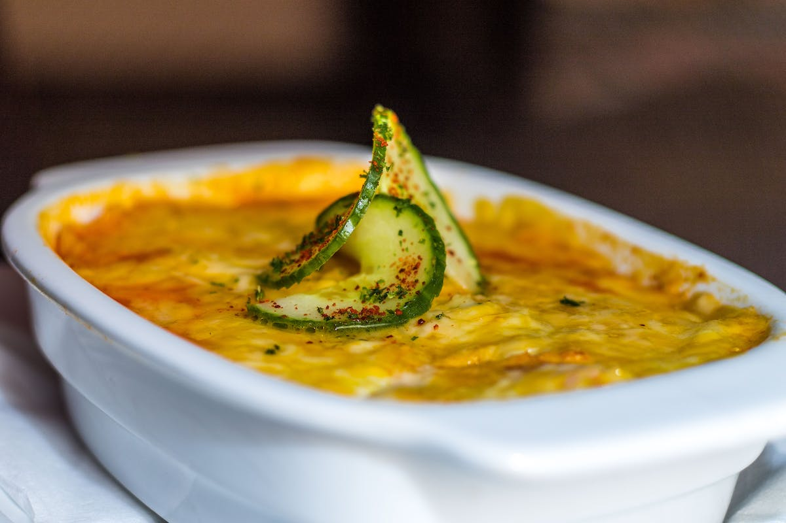

Lasagna

Faster to cook using less expensive ingredients
Ingredients
- Lasagna noodles
- Lean ground beef
- Pepper
- Spaghetti sauce
- Cheese
- Garlic
Steps
- Bring a large pot of lightly salted water to a boil.
Add pasta and cook for 8 to 10 minutes or until
al dente; drain.
- Preheat oven to 350 degrees F (175 degrees C).
In a large skillet over medium-high heat, brown
beef and season with salt and pepper; drain. Stir in
spaghetti sauce and garlic and simmer 5 minutes.
- In a medium bowl, combine mozzarella, Cheddar and
ricotta; stir well. In 9x13 inch pan, alternate layers
of noodles, meat mixture and cheese mixture until pan
is filled.
- Bake in preheated oven for 30 minutes,
or until cheese is melted and bubbly.